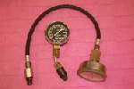
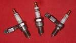

Guessing at a fault wastes time and money. A short plan that collects facts, lists the likely causes and tests the cheapest one first finds most faults quicker. The method works on any bike, any engine and any fault.
Safety
- Test while the bike is stable on a stand, in neutral, with the engine off, unless the test needs it to run.
- Keep fuel away from sparks while you test.
You need
- A notebook or phone to write down facts.
- Basic hand tools and a torch.
- The checks in the repair pages that fit the symptom.
Steps
- Write the symptom in one line. For example: "cranks but will not start" or "cuts out at the same speed."
- Collect facts. Note which are repeatable (it always misfires at the same engine speed), which are reports (the owner says it comes and goes), and which come from history (bike left standing for years, recent work, recent rain).
- Ask when it began. Sudden: look for a failed part, a loose connector, a switch, fuel or a mechanical failure. Gradual: look for wear, a clogging filter or a slow leak.
- List 2 or 3 likely causes. Give them a rough order, from "most likely and cheap to check" to "unlikely and costly." Put an electrical, a fuel and a mechanical cause on the list.
- Test the cheapest, fastest cause first. Change one thing at a time. If you change three things at once, you will not know which one mattered.
- For an engine that will not start, check in this order:
- Does it turn freely and have compression? Test engine compression
- Is there a strong spark? Check for a spark safely
- Is fuel reaching the engine? Test fuel supply with a small shot of fuel
- After each test, update the list. A new fact makes some causes more likely and others less. If a test points to a major fault (for example no compression), stop work on small things such as carburettor cleaning until it is fixed.
- Do not rule things out as impossible. Ask why a part failed. A melted piston can follow a wrong plug, an air leak or a changed jet. Fix the cause, not only the damage.
- Write down what you changed. If the fault returns, you know what to look at.
Check your work
- You can state the fault, how you proved it, and what you changed.
- The bike runs properly on a test ride.
If it did not fix the problem
- Go back to step 2 and look for a fact you missed.
- Choose the problem page that matches the symptom: Engine turns over but will not start, Electrical faults come and go.